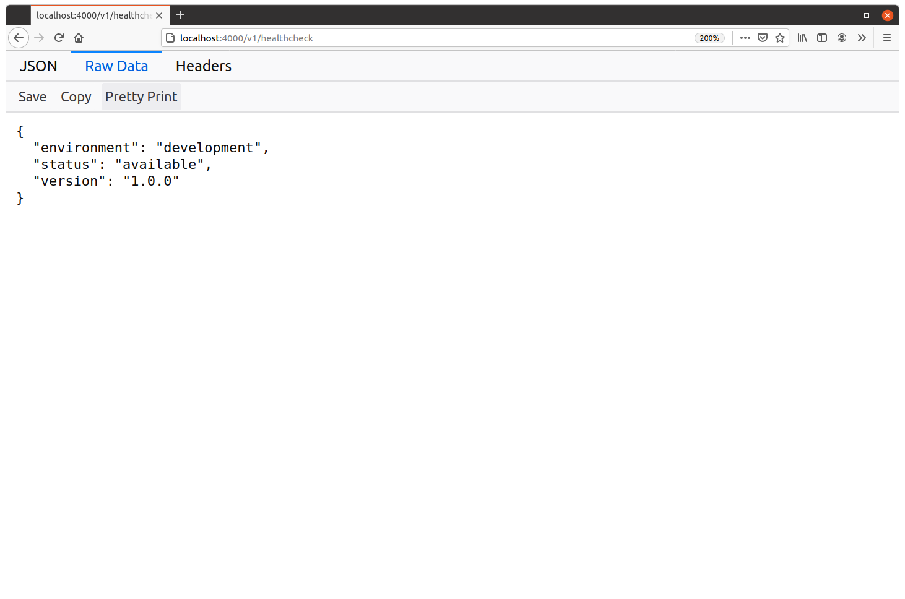

کدگذاری JSON
بیایید سراغ چیز کمی هیجانانگیزتری برویم و ببینیم چطور typeهای native در Go، مثل mapها، structها و sliceها، را به JSON encode کنیم.
در سطح کلی، پکیج encoding/json در Go دو گزینه برای encode کردن چیزها به JSON فراهم میکند. میتوانید function مربوط به json.Marshal() را صدا بزنید، یا یک type از جنس json.Encoder تعریف و استفاده کنید.
در این فصل توضیح میدهیم هر دو رویکرد چطور کار میکنند، اما برای هدف ارسال JSON در یک پاسخ HTTP، استفاده از json.Marshal() معمولا انتخاب بهتری است. پس با همین شروع میکنیم.
نحوه کار json.Marshal() از نظر مفهومی خیلی ساده است: یک مقدار native از Go را به عنوان argument به آن میدهید و این function نمایش JSON آن مقدار را در یک slice از نوع []byte برمیگرداند. امضای function به این شکل است:
func Marshal(v any) ([]byte, error)
بیایید وارد کار شویم و healthcheckHandler را بهروزرسانی کنیم تا به جای استفاده از string با فرمت ثابت مثل قبل، از json.Marshal() برای تولید مستقیم پاسخ JSON از یک map در Go استفاده کند. به این شکل:
package main import ( "encoding/json" // New import "net/http" ) func (app *application) healthcheckHandler(w http.ResponseWriter, r *http.Request) { // Create a map which holds the information that we want to send in the response. data := map[string]string{ "status": "available", "environment": app.config.env, "version": version, } // Pass the map to the json.Marshal() function. This returns a []byte slice // containing the encoded JSON. If there was an error, we log it and send the client // a generic error message. js, err := json.Marshal(data) if err != nil { app.logger.Error(err.Error()) http.Error(w, "The server encountered a problem and could not process your request", http.StatusInternalServerError) return } // Append a newline to the JSON. This is just a small nicety to make it easier to // view in terminal applications. js = append(js, '\n') // At this point we know that encoding the data worked without any problems, so we // can safely set any necessary HTTP headers for a successful response. w.Header().Set("Content-Type", "application/json") // Use w.Write() to send the []byte slice containing the JSON as the response body. w.Write(js) }
اگر API را دوباره راهاندازی کنید و آدرس localhost:4000/v1/healthcheck را در مرورگر باز کنید، حالا باید پاسخی شبیه این بگیرید:

خوب به نظر میرسد؛ میتوانیم ببینیم که map به صورت خودکار برای ما به یک JSON object encode شده و جفتهای key-value داخل map، به صورت جفتهای key-value مرتبشده بر اساس حروف الفبا در JSON object ظاهر شدهاند.
ایجاد helper method به نام writeJSON
با بزرگتر شدن API، پاسخهای JSON زیادی ارسال خواهیم کرد؛ بنابراین منطقی است بخشی از این منطق را به یک helper method قابل استفاده مجدد به نام writeJSON() منتقل کنیم.
علاوه بر ساخت و ارسال JSON، میخواهیم این helper را طوری طراحی کنیم که بعدا بتوانیم headerهای دلخواه را در پاسخهای موفق قرار دهیم؛ مثلا یک header از نوع Location بعد از ایجاد یک فیلم جدید در سیستم.
اگر همراه کتاب کدنویسی میکنید، فایل cmd/api/helpers.go را دوباره باز کنید و متد writeJSON() زیر را ایجاد کنید:
package main import ( "encoding/json" // New import "errors" "net/http" "strconv" "github.com/julienschmidt/httprouter" ) ... // Define a writeJSON() helper for sending responses. This takes the destination // http.ResponseWriter, the HTTP status code to send, the data to encode to JSON, and a // headers map containing any additional HTTP headers we want to include in the response. func (app *application) writeJSON(w http.ResponseWriter, status int, data any, headers http.Header) error { // Encode the data to JSON, returning the error if there was one. js, err := json.Marshal(data) if err != nil { return err } // Append a newline to make it easier to view in terminal applications. js = append(js, '\n') // At this point, we know that we won't encounter any more errors before writing the // response, so it's safe to add any headers that we want to include. We loop // through the headers map (which behind the scenes has the type map[string][]string) // and add all the header keys and values to the http.ResponseWriter's header map. // Note that it's OK if the provided headers map is nil. Go doesn't throw an error // if you try to range over (or generally, read from) a nil map. for key, values := range headers { for _, value := range values { w.Header().Add(key, value) } } // Add the "Content-Type: application/json" header, then write the status code and // JSON response. w.Header().Set("Content-Type", "application/json") w.WriteHeader(status) w.Write(js) return nil }
حالا که helper مربوط به writeJSON() آماده است، میتوانیم کد داخل healthcheckHandler را به شکل قابل توجهی سادهتر کنیم، به این صورت:
package main import ( "net/http" ) func (app *application) healthcheckHandler(w http.ResponseWriter, r *http.Request) { data := map[string]string{ "status": "available", "environment": app.config.env, "version": version, } err := app.writeJSON(w, http.StatusOK, data, nil) if err != nil { app.logger.Error(err.Error()) http.Error(w, "The server encountered a problem and could not process your request", http.StatusInternalServerError) } }
اگر حالا برنامه را دوباره اجرا کنید، همه چیز درست compile میشود و یک درخواست به endpoint مربوط به GET /v1/healthcheck باید همان پاسخ HTTP قبلی را ایجاد کند.
اطلاعات تکمیلی
typeهای مختلف Go چطور encode میشوند
در این فصل یک type از جنس map[string]string را به JSON encode کردهایم که نتیجه آن یک JSON object با stringهای JSON به عنوان مقدارهای جفتهای key-value بود. اما Go از encode کردن typeهای native بسیار دیگری هم پشتیبانی میکند.
جدول زیر خلاصه میکند که typeهای مختلف Go هنگام encoding به چه data typeهایی در JSON نگاشت میشوند:
| نوع JSON | ⇒ | نوع Go |
|---|---|---|
| boolean در JSON | ⇒ | bool |
| string در JSON | ⇒ | string |
| number در JSON | ⇒ | int*, uint*, float*, rune |
| array در JSON | ⇒ | arrays, non-nil slices |
| object در JSON | ⇒ | structs, non-nil maps |
| null در JSON | ⇒ | nil pointers, interface values, slices, maps |
| پشتیبانی نمیشود | ⇒ | chan, func, complex* |
| string در JSON با فرمت RFC3339 | ⇒ | time.Time |
| string در JSON با encoding از نوع Base64 | ⇒ | []byte |
دو مورد آخر حالتهای خاصی هستند که کمی توضیح بیشتر لازم دارند:
مقدارهای
time.Timeدر Go که پشت صحنه در واقع یک struct هستند، به جای JSON object، به صورت یک string در JSON با فرمت RFC 3339 مثل"2020-11-08T06:27:59+01:00"encode میشوند.یک slice از نوع
[]byteبه جای JSON array، به صورت یک string در JSON با encoding از نوع base64 encode میشود. برای مثال، byte sliceای مثل[]byte{'h','e','l','l','o'}در خروجی JSON به صورت"aGVsbG8="ظاهر میشود. encoding از نوع base64 از padding و character set استاندارد استفاده میکند.
چند نکته مهم دیگر هم وجود دارد که باید به آنها اشاره کنیم:
encode کردن typeهای تودرتو پشتیبانی میشود. برای مثال، اگر در Go یک slice از structها داشته باشید، در JSON به یک array از objectها encode میشود.
channelها، functionها و typeهای عددی
complexقابل encode شدن نیستند. اگر تلاش کنید این کار را انجام دهید، در runtime خطایjson.UnsupportedTypeErrorمیگیرید.هر مقدار pointer به صورت مقداری که به آن اشاره میکند encode میشود.
استفاده از json.Encoder
در ابتدای این فصل اشاره کردم که برای انجام encoding، میتوان از type مربوط به json.Encoder در Go هم استفاده کرد. این کار به شما اجازه میدهد یک مقدار Go را به JSON encode کنید و همان JSON را در یک output stream بنویسید، آن هم در یک مرحله.
برای مثال، میتوانید در یک handler به این شکل از آن استفاده کنید:
func (app *application) exampleHandler(w http.ResponseWriter, r *http.Request) { data := map[string]string{ "hello": "world", } // Set the "Content-Type: application/json" header on the response. w.Header().Set("Content-Type", "application/json") // Use the json.NewEncoder() function to initialize a json.Encoder instance that // writes to the http.ResponseWriter. Then we call its Encode() method, passing in // the data that we want to encode to JSON (which in this case is the map above). If // the data can be successfully encoded to JSON, it will then be written to our // http.ResponseWriter. err := json.NewEncoder(w).Encode(data) if err != nil { app.logger.Error(err.Error()) http.Error(w, "The server encountered a problem and could not process your request", http.StatusInternalServerError) } }
این الگو کار میکند و خیلی مرتب و شستهرفته است، اما اگر با دقت به آن نگاه کنید شاید متوجه یک مشکل کوچک شوید…
وقتی json.NewEncoder(w).Encode(data) را صدا میزنیم، JSON در یک مرحله ساخته و در http.ResponseWriter نوشته میشود. یعنی فرصتی نداریم که headerهای پاسخ HTTP را به صورت شرطی و بر اساس اینکه متد Encode() خطا برمیگرداند یا نه، تنظیم کنیم.
برای مثال تصور کنید میخواهید در یک پاسخ موفق، header مربوط به Cache-Control را تنظیم کنید، اما اگر encoding JSON شکست خورد و مجبور شدید یک پاسخ خطا برگردانید، header مربوط به Cache-Control را تنظیم نکنید.
پیادهسازی تمیز این رفتار هنگام استفاده از الگوی json.Encoder نسبتا سخت است.
میتوانید header مربوط به Cache-Control را تنظیم کنید و بعد در صورت بروز خطا، دوباره آن را از header map حذف کنید؛ اما این کار چندان تمیز نیست.
گزینه دیگر این است که JSON را به جای نوشتن مستقیم در http.ResponseWriter، ابتدا در یک bytes.Buffer موقت بنویسید. بعد میتوانید پیش از تنظیم header مربوط به Cache-Control و کپی کردن JSON از bytes.Buffer به http.ResponseWriter، وجود خطا را بررسی کنید. اما وقتی به این نقطه برسید، استفاده از رویکرد جایگزین یعنی json.Marshal() سادهتر و تمیزتر است و حتی کمی هم سریعتر خواهد بود.
کارایی json.Encoder و json.Marshal
حالا که صحبت از سرعت شد، شاید برایتان سوال شود که آیا بین استفاده از json.Encoder و json.Marshal() تفاوتی از نظر performance وجود دارد یا نه. پاسخ کوتاه این است: بله… اما این تفاوت کوچک است و در بیشتر موارد لازم نیست نگرانش باشید.
benchmarkهای زیر performance دو رویکرد را با استفاده از کد موجود در این gist نشان میدهند. توجه کنید که هر benchmark test سه بار تکرار شده است:
$ go test -run=^$ -bench=. -benchmem -count=3 -benchtime=5s goos: linux goarch: amd64 BenchmarkEncoder-8 3477318 1692 ns/op 1046 B/op 15 allocs/op BenchmarkEncoder-8 3435145 1704 ns/op 1048 B/op 15 allocs/op BenchmarkEncoder-8 3631305 1595 ns/op 1039 B/op 15 allocs/op BenchmarkMarshal-8 3624570 1616 ns/op 1119 B/op 16 allocs/op BenchmarkMarshal-8 3549090 1626 ns/op 1123 B/op 16 allocs/op BenchmarkMarshal-8 3548070 1638 ns/op 1123 B/op 16 allocs/op
در این نتایج میبینیم که json.Marshal() نسبت به json.Encoder مقدار بسیار کمی memory بیشتری نیاز دارد (B/op) و یک allocation اضافهتر هم روی heap انجام میدهد (allocs/op).
بین میانگین runtime دو رویکرد (ns/op) تفاوت قابل مشاهده و آشکاری وجود ندارد. شاید با نمونه benchmark بزرگتر یا data set بزرگتر، تفاوتی مشخص شود، اما احتمالا در حد microsecond خواهد بود، نه چیزی بزرگتر از آن.
جزئیات بیشتر در encoding به JSON
encode کردن چیزها به JSON در Go معمولا کاملا قابل حدس است. اما چند رفتار ریز وجود دارد که ممکن است در اولین مواجهه غافلگیرتان کند.
در همین فصل به چند مورد از آنها اشاره کردهایم؛ بهخصوص مرتب شدن entryهای map بر اساس حروف الفبا و encode شدن byte sliceها به صورت base64. اما فهرست کاملتری را در این ضمیمه آوردهام.